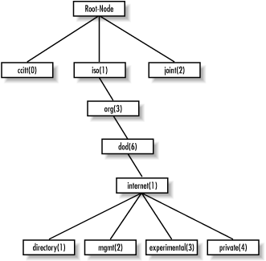

2.3.1. Naming OIDs
Managed
objects are organized into a tree-like hierarchy. This structure is
the basis for SNMP's naming scheme. An object ID is made up of
a series of integers based on the nodes in the tree, separated by
dots (.). Although there's a human-readable form that's
more friendly than a string of numbers, this form is nothing more
than a series of names separated by dots, each of which represents a
node of the tree. So you can use the numbers themselves, or you can
use a sequence of names that represent the numbers.
Figure 2-2 shows the top few levels of this tree. (We
have intentionally left out some branches of the tree that
don't concern us here.)

Figure 2-2. SMI object tree
In the object tree, the node at
the top of the tree is called the
root,
anything with children is called a
subtree,
and anything without children is called a
leaf
node. For example,
Figure 2-2's
root, the starting point for the tree, is called
"Root-Node." Its subtree is made up of
ccitt(0),
iso(1), and
joint(2). In this illustration,
iso(1) is the only node that contains a subtree;
the other two nodes are both leaf nodes.
ccitt(0) and
joint(2) do
not pertain to SNMP, so they will not be discussed in this
book.
[8]
For the remainder of this
book we will focus on the
iso(1).org(3).dod(6
).internet(1) subtree,
[9] which is represented in OID form as
1.3.6.1 or as
iso.org.dod.internet. Each managed object has a
numerical OID and an associated textual name. The dotted-decimal
notation is how a managed object is represented internally within an
agent; the textual name, like an IP domain name, saves humans from
having to remember long, tedious strings of integers.
The
directory
branch currently is not used. The
management
branch, or
mgmt, defines a standard set of
Internet management objects. The
experimental
branch is reserved for testing and research purposes. Objects under
the
private branch are defined unilaterally,
which means that individuals and organizations are responsible for
defining the objects under this branch. Here is the definition of the
internet subtree, as well as all four of its
subtrees:
internet OBJECT IDENTIFIER ::= { iso org(3) dod(6) 1 }
directory OBJECT IDENTIFIER ::= { internet 1 }
mgmt OBJECT IDENTIFIER ::= { internet 2 }
experimental OBJECT IDENTIFIER ::= { internet 3 }
private OBJECT IDENTIFIER ::= { internet 4 }
The first line declares
internet as the OID
1.3.6.1, which is defined as a subtree of
iso.org.dod, or
1.3.6 (the
::= is a definition operator). The last four
declarations are similar, but they define the other branches that
belong to
internet. For the
directory branch, the notation
{
internet 1 } tells us that it is part of the
internet subtree, and that its OID is
1.3.6.1.1. The OID for
mgmt
is
1.3.6.1.2, and so on.
There is currently one branch under the
private
subtree. It's used to give hardware and software vendors the
ability to define their own private objects for any type of hardware
or software they want managed by SNMP. Its SMI definition is:
enterprises OBJECT IDENTIFIER ::= { private 1 }
The Internet Assigned
Numbers Authority (IANA) currently manages all the private enterprise
number assignments for individuals, institutions, organizations,
companies, etc.
[10] A list of
all the current private enterprise numbers can be obtained from
ftp://ftp.isi.edu/in-notes/iana/assignments/enterprise-numbers.
As an example, Cisco Systems's private enterprise number is 9,
so the base OID for its private object space is defined as
iso.org.dod.internet.private.enterprises.cisco,
or
1.3.6.1.4.1.9. Cisco is free to do as it
wishes with this private branch. It's typical for companies
such as Cisco that manufacture networking equipment to define their
own private enterprise objects. This allows for a richer set of
management information than can be gathered from the standard set of
managed objects defined under the
mgmt branch.
Companies aren't the
only ones who can register their own private enterprise numbers.
Anyone can do so, and it's free. The web-based form for
registering private enterprise numbers can be found at
http://www.isi.edu/cgi-bin/iana/enterprise.pl.
After you fill in the form, which asks for information such as your
organization's name and contact information, your request
should be approved in about a week. Why would you want to register
your own number? When you become more conversant in SNMP,
you'll find things you want to monitor that aren't
covered by any MIB, public or private. With your own enterprise
number, you can create your own private MIB that allows you to
monitor exactly what you want. You'll need to be somewhat
clever in extending your agents so that they can look up the
information you want, but it's very doable.
2.3.2. Defining OIDs
The
SYNTAX attribute provides for definitions of
managed objects through a subset of ASN.1. SMIv1 defines several
datatypes that are paramount to the management of networks and
network devices. It's important to keep in mind that these
datatypes are simply a way to define what kind of information a
managed object can hold. The types we'll be discussing are
similar to those that you'd find in a computer programming
language like C.
Table 2-1 lists the supported
datatypes for SMIv1.
Table 2-1. SMIv1 Datatypes
|
Datatype
|
Description
|
INTEGER
|
A 32-bit number often used to specify enumerated types within the
context of a single managed object. For example, the operational
status of a router interface can be up,
down, or testing. With
enumerated types, 1 would represent up, 2 down, and 3 testing. The
value zero (0) must not be used as an enumerated type, according to
RFC 1155.
|
OCTET STRING
|
A string of zero or more octets (more commonly known as bytes)
generally used to represent text strings, but also sometimes used to
represent physical addresses.
|
Counter
|
A 32-bit number with minimum value 0 and maximum value
232 - 1 (4,294,967,295). When the maximum
value is reached, it wraps back to zero and starts over. It's
primarily used to track information such as the number of octets sent
and received on an interface or the number of errors and discards
seen on an interface. A Counter is monotonically
increasing, in that its values should never decrease during normal
operation. When an agent is rebooted, all Counter
values should be set to zero. Deltas are used to determine if
anything useful can be said for successive queries of
Counter values. A delta is computed by querying a
Counter at least twice in a row, and taking the
difference between the query results over some time interval.
|
OBJECT IDENTIFIER
|
A dotted-decimal string that represents a managed object within the
object tree. For example, 1.3.6.1.4.1.9
represents Cisco Systems's private enterprise OID.
|
NULL
|
Not currently used in SNMP.
|
SEQUENCE
|
Defines lists that contain zero or more other ASN.1 datatypes.
|
SEQUENCE OF
|
Defines a managed object that is made up of a
SEQUENCE of ASN.1 types.
|
IpAddress
|
Represents a 32-bit IPv4 address. Neither SMIv1 nor SMIv2 discusses
128-bit IPv6 addresses; this problem will be addressed by the
IETF's SMI Next Generation (SMING) working group (see
http://www.ietf.org/html.charters/sming-charter.html
).
|
NetworkAddress
|
Same as the IpAddress type, but can represent
different network address types.
|
Gauge
|
A 32-bit number with minimum value 0 and maximum value
232 - 1 (4,294,967,295). Unlike a
Counter, a Gauge can increase
and decrease at will, but it can never exceed its maximum value. The
interface speed on a router is measured with a
Gauge.
|
TimeTicks
|
A 32-bit number with minimum value 0 and maximum value
232 - 1 (4,294,967,295).
TimeTicks measures time in hundredths of a second.
Uptime on a device is measured using this datatype.
|
Opaque
|
Allows any other ASN.1 encoding to be stuffed into an
OCTET STRING.
|
The goal of all these object types is to
define managed objects. In Chapter 1, "What Is SNMP?", we said that
a MIB is a logical grouping of managed objects as they pertain to a
specific management task, vendor, etc. The MIB can be thought of as a
specification that defines the managed objects a vendor or device
supports. Cisco, for instance, has literally hundreds of MIBs defined
for its vast product line. For example, its Catalyst device has a
separate MIB from its 7000 series router. Both devices have different
characteristics that require different management capabilities.
Vendor-specific MIBs typically are distributed as human-readable text
files that can be inspected (or even modified) with a standard text
editor such as vi.
TIP:
Most modern NMS products maintain a compact form of all the MIBs that
define the set of managed objects for all the different types of
devices they're responsible for managing. NMS administrators
will typically compile a vendor's MIB into a format the NMS can
use. Once a MIB has been loaded or compiled, administrators can refer
to managed objects using either the numeric or human-readable object
ID.
It's important to know how to read
and understand MIB files. The following example is a stripped-down
version of MIB-II (anything preceded by
-- is a
comment):
RFC1213-MIB DEFINITIONS ::= BEGIN
IMPORTS
mgmt, NetworkAddress, IpAddress, Counter, Gauge,
TimeTicks
FROM RFC1155-SMI
OBJECT-TYPE
FROM RFC 1212;
mib-2 OBJECT IDENTIFIER ::= { mgmt 1 }
-- groups in MIB-II
system OBJECT IDENTIFIER ::= { mib-2 1 }
interfaces OBJECT IDENTIFIER ::= { mib-2 2 }
at OBJECT IDENTIFIER ::= { mib-2 3 }
ip OBJECT IDENTIFIER ::= { mib-2 4 }
icmp OBJECT IDENTIFIER ::= { mib-2 5 }
tcp OBJECT IDENTIFIER ::= { mib-2 6 }
udp OBJECT IDENTIFIER ::= { mib-2 7 }
egp OBJECT IDENTIFIER ::= { mib-2 8 }
transmission OBJECT IDENTIFIER ::= { mib-2 10 }
snmp OBJECT IDENTIFIER ::= { mib-2 11 }
-- the Interfaces table
-- The Interfaces table contains information on the entity's
-- interfaces. Each interface is thought of as being
-- attached to a 'subnetwork.' Note that this term should
-- not be confused with 'subnet,' which refers to an
-- addressing-partitioning scheme used in the Internet
-- suite of protocols.
ifTable OBJECT-TYPE
SYNTAX SEQUENCE OF IfEntry
ACCESS not-accessible
STATUS mandatory
DESCRIPTION
"A list of interface entries. The number of entries is
given by the value of ifNumber."
::= { interfaces 2 }
ifEntry OBJECT-TYPE
SYNTAX IfEntry
ACCESS not-accessible
STATUS mandatory
DESCRIPTION
"An interface entry containing objects at the subnetwork
layer and below for a particular interface."
INDEX { ifIndex }
::= { ifTable 1 }
IfEntry ::=
SEQUENCE {
ifIndex
INTEGER,
ifDescr
DisplayString,
ifType
INTEGER,
ifMtu
INTEGER,
ifSpeed
Gauge,
ifPhysAddress
PhysAddress,
ifAdminStatus
INTEGER,
ifOperStatus
INTEGER,
ifLastChange
TimeTicks,
ifInOctets
Counter,
ifInUcastPkts
Counter,
ifInNUcastPkts
Counter,
ifInDiscards
Counter,
ifInErrors
Counter,
ifInUnknownProtos
Counter,
ifOutOctets
Counter,
ifOutUcastPkts
Counter,
ifOutNUcastPkts
Counter,
ifOutDiscards
Counter,
ifOutErrors
Counter,
ifOutQLen
Gauge,
ifSpecific
OBJECT IDENTIFIER
}
ifIndex OBJECT-TYPE
SYNTAX INTEGER
ACCESS read-only
STATUS mandatory
DESCRIPTION
"A unique value for each interface. Its value ranges
between 1 and the value of ifNumber. The value for each
each interface must remain constant at least from one
reinitialization of the entity's network-management
system to the next reinitialization."
::= { ifEntry 1 }
ifDescr OBJECT-TYPE
SYNTAX DisplayString (SIZE (0..255))
ACCESS read-only
STATUS mandatory
DESCRIPTION
"A textual string containing information about the
interface. This string should include the name of
the manufacturer, the product name, and the version
of the hardware interface."
::= { ifEntry 2 }
END
The
first line of this file defines the name of the MIB, in this case
RFC1213-MIB. (RFC 1213 is the RFC that defines
MIB-II; many of the MIBs we refer to are defined by RFCs). The format
of this definition is always the same. The
IMPORTS
section of the MIB is sometimes referred to as the
linkage section. It allows you to import
datatypes and OIDs from other MIB files using the
IMPORTS clause. This MIB imports the following
items from
RFC1155-SMI (RFC 1155 defines SMIv1,
which we discussed earlier in this chapter):
-
mgmt
-
NetworkAddress
-
IpAddress
-
Counter
-
Gauge
-
TimeTicks
It also imports
OBJECT-TYPE from RFC 1212, the
Concise
MIB Definition, which defines how MIB files are written.
Each group of items imported using the
IMPORTS
clause uses a
FROM clause to define the MIB file
from which the objects are taken.
The OIDs that will be used throughout the remainder of the MIB follow
the linkage section. This group of lines sets up the top level of the
mib-2 subtree.
mib-2 is
defined as
mgmt followed by
.1. We saw earlier that
mgmt was equivalent to
1.3.6.1.2. Therefore,
mib-2
is equivalent to
1.3.6.1.2.1. Likewise, the
interfaces group under
mib-2 is defined as
{ mib-2 2
}, or
1.3.6.1.2.1.2.
After the OIDs are defined, we get to the actual object definitions.
Every object definition has the following format:
<name> OBJECT-TYPE
SYNTAX <datatype>
ACCESS <either read-only, read-write, write-only, or not-accessible>
STATUS <either mandatory, optional, or obsolete>
DESCRIPTION
"Textual description describing this particular managed object."
::= { <Unique OID that defines this object> }
The
first managed object in our subset of the MIB-II definition is
ifTable, which represents a table of network
interfaces on a managed device (note that object names are defined
using mixed case, with the first letter in lowercase). Here is its
definition using ASN.1 notation:
ifTable OBJECT-TYPE
SYNTAX SEQUENCE OF IfEntry
ACCESS not-accessible
STATUS mandatory
DESCRIPTION
"A list of interface entries. The number of entries is given by
the value of ifNumber."
::= { interfaces 2 }
The
SYNTAX of
ifTable is
SEQUENCE OF
IfEntry. This means that
ifTable is a table containing the columns
defined in
IfEntry. The object is
not-accessible, which means that there is no way
to query an agent for this object's value. Its status is
mandatory, which means an agent must implement
this object in order to comply with the MIB-II specification. The
DESCRIPTION describes what exactly this object is.
The unique OID is
1.3.6.1.2.1.2.2, or
iso.org.dod.internet.mgmt.interfaces.2.
Let's now look at the
SEQUENCE definition
from the MIB file earlier in this section, which is used with the
SEQUENCE OF type in the
ifTable definition:
IfEntry ::=
SEQUENCE {
ifIndex
INTEGER,
ifDescr
DisplayString,
ifType
INTEGER,
ifMtu
INTEGER,
.
.
.
ifSpecific
OBJECT IDENTIFIER
}
Note
that the name of the sequence (
IfEntry) is
mixed-case, but the first letter is capitalized, unlike the object
definition for
ifTable. This is how a sequence
name is defined. A sequence is simply a list of columnar objects and
their SMI datatypes, which defines a conceptual table. In this case,
we expect to find variables defined by
ifIndex,
ifDescr,
ifType, etc. This
table can contain any number of rows; it's up to the agent to
manage the rows that reside in the table. It is possible for an NMS
to add rows to a table. This operation is covered later, in
Section 2.6.4, "The set Operation".
Now that we have
IfEntry to specify what we'll find in any
row of the table, we can look back to the definition of
ifEntry (the actual rows of the table) itself:
ifEntry OBJECT-TYPE
SYNTAX IfEntry
ACCESS not-accessible
STATUS mandatory
DESCRIPTION
"An interface entry containing objects at the subnetwork layer
and below for a particular interface."
INDEX { ifIndex }
::= { ifTable 1 }
ifEntry
defines a particular row in the
ifTable. Its
definition is almost identical to that of
ifTable, except we have introduced a new clause,
INDEX. The index is a unique key used to define a
single row in the
ifTable. It's up to the
agent to make sure the index is unique within the context of the
table. If a router has six interfaces,
ifTable
will have six rows in it.
ifEntry's OID is
1.3.6.1.2.1.2.2.1, or
iso.org.dod.internet.mgmt.interfaces.ifTable.ifEntry.
The index for
ifEntry is
ifIndex, which is defined as:
ifIndex OBJECT-TYPE
SYNTAX INTEGER
ACCESS read-only
STATUS mandatory
DESCRIPTION
"A unique value for each interface. Its value ranges between
1 and the value of ifNumber. The value for each interface
must remain constant at least from one reinitialization of the
entity's network-management system to the next reinitialization."
::= { ifEntry 1 }
The
ifIndex object is
read-only,
which means we can see its value, but we cannot change it. The final
object our MIB defines is
ifDescr, which is a
textual description for the interface represented by that particular
row in the
ifTable. Our MIB example ends with
the
END clause, which marks the end of the MIB. In
the actual MIB-II files, each object listed in the
IfEntry sequence has its own object definition.
In this version of the MIB we list only two of them, in the interest
of conserving space.